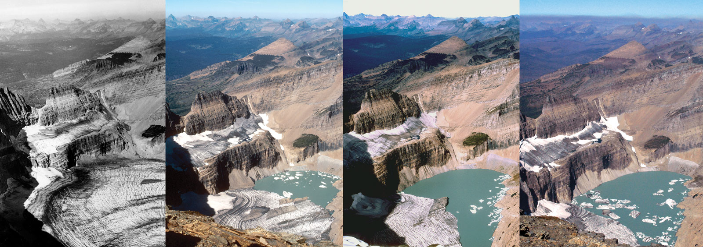

EFFECTS OF CLIMATE CHANGE
some serious effects of climate change are:
- Ice is melting worldwide, especially at the Earth’s poles. This includes mountain glaciers, ice sheets covering West Antarctica and Greenland, and Arctic sea ice. In Montana's Glacier National Park the number of glaciers has declined to fewer than 30 from more than 150 in 1910.
- Much of this melting ice contributes to sea-level rise. Global sea levels are rising 0.13 inches (3.2 millimeters) a year, and the rise is occurring at a faster rate in recent years.
- Rising temperatures are affecting wildlife and their habitats. Vanishing ice has challenged species such as the Adélie penguin in Antarctica, where some populations on the western peninsula have collapsed by 90 percent or more.
- As temperatures change, many species are on the move. Some butterflies, foxes, and alpine plants have migrated farther north or to higher, cooler areas.
- Precipitation (rain and snowfall) has increased across the globe, on average. Yet some regions are experiencing more severe drought, increasing the risk of wildfires, lost crops, and drinking water shortages.
- Some species—including mosquitoes, ticks, jellyfish, and crop pests—are thriving. Booming populations of bark beetles that feed on spruce and pine trees, for example, have devastated millions of forested acres in the U.S.
- Sea levels are expected to rise between 10 and 32 inches (26 and 82 centimeters) or higher by the end of the century.
- Hurricanes and other storms are likely to become stronger. Floods and droughts will become more common. Large parts of the U.S., for example, face a higher risk of decades-long "megadroughts" by 2100.
- Less freshwater will be available, since glaciers store about three-quarters of the world's freshwater.
- Some diseases will spread, such as mosquito-borne malaria (and the 2016 resurgence of the Zika virus)
- Ecosystems will continue to change: Some species will move farther north or become more successful; others, such as polar bears, won’t be able to adapt and could become extinct

GRINNEL GLACIER SHRINKAGE :
A series of photographs of the Grinnell Glacier taken from the summit of Mount Gould in Glacier National Park, Montana, in 1938, 1981, 1998, and 2006 (from left to right). In 1938 the Grinnell Glacier filled the entire area at the bottom of the image. By 2006 it had largely disappeared from this view.